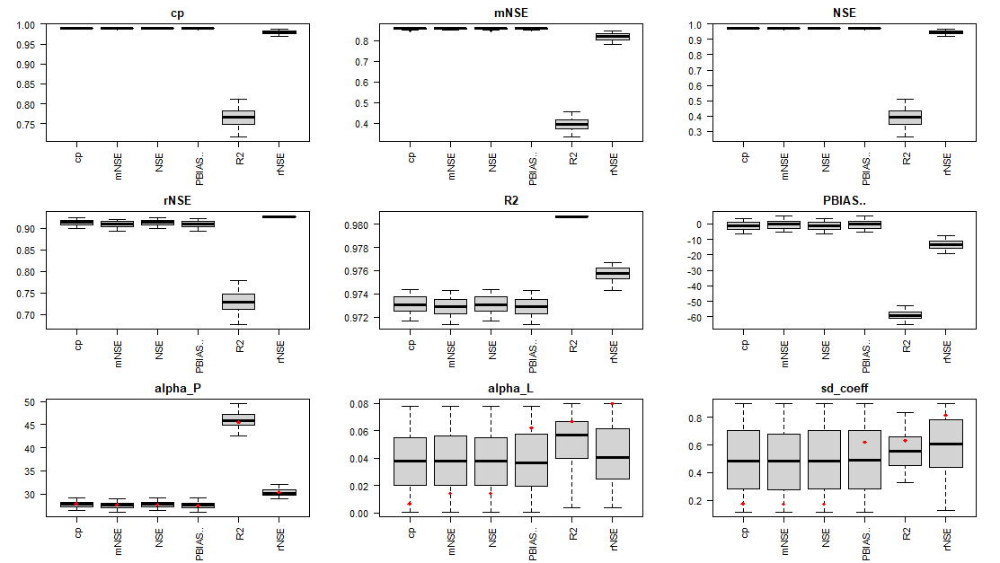

Geospatial Regression Equation for European Nutrient losses (GREEN)
Source:vignettes/GREENeR.Rmd
GREENeR.RmdThis Vignette illustrates how to use the GREENeR package for assessing annual time series of nutrient (total nitrogen TN and total phosphorus TP) loads in surface water from a basin or region of interest, including assessing land and river retention, and contribution shares by source.
Description of the tool
GREENeR (Udías et al. 2024) is an open-source R package for assessing annual time series of nutrient loads in a river network and at the basin outlets, and contributions of nutrient sources to these loads. The package provides tools and methods to apply the model Geospatial Regression Equation for European Nutrient losses (GREEN; (B. Grizzetti et al. 2005; B. Grizzetti, Bouraoui, and De Marsily 2008; Bruna Grizzetti, Bouraoui, and Aloe 2012; Bruna Grizzetti et al. 2021)) to an area of interest. A brief description of the model, including sources and parameters, can be found at the end of this document.
The package includes functions to perform graphical summaries of model inputs, calibrate model parameters, run sensitivity analysis checks, and visualize model inputs and outputs through graphs and maps of total loads and contributions by source. The package works for both total nitrogen (TN) and total phosphorus (TP). It allows the analysis of different scenarios of nutrient input in the river basin or region of study. The package is parallel-capable to alleviate the computational burden in large basins.
An example case: the Lay river Basin
GREENeR functionalities are illustrated for the Lay river basin, in France. Please note that the basin data are extracted from a pan-European dataset (Bruna Grizzetti et al. 2021) for the purpose of showing the package tools and the analysis steps for a generic region. Since the dataset may not reflect local sources correctly, implications of results in terms of nutrient fluxes may be incorrect and are not evaluated nor commented herein.
The package includes two nutrient type scenarios (one for TN and one for TP), with disaggregated information on nutrient inputs for all catchments that compose the basin (spatial resolution of the Catchment Characterisation Model; (De Jager and Vogt 2007)). Both input (TN and TP) time series span from 1990 to 2018. The dataset includes also spatial information in vectorial format to enable mapping of tool results.
Loading and description of the scenario
GreeneR needs information on the topology of the catchment and nutrient sources. All information is contained in two data.frames. Note that data.frame structures and column names must be respected when creating a new dataset, otherwise the functions will fail.
The topology is contained in the data.frame “catch_data_TN” (or catch_data_TP; in the example dataset, the Lay river Basin topology is presented).
# load the topological sequence of catchments and complementary info
data(catch_data_TN)
head(catch_data_TN)
#> HydroID To_catch Shreve LakeFrRet NrmLengthKm
#> 1 361076 361195 1 0 0.010270
#> 28 361521 362009 4 0 0.059295
#> 55 362311 362426 2 0 0.011319
#> 84 361187 361195 2 0 0.011948
#> 109 361383 361521 1 0 0.005731
#> 136 362149 362175 1 0 0.002374The fields are defined as follow:
HydroID (integer): unique identifier of the catchment
To_catch (integer): unique identifier of the catchment to which the catchment goes. Note that for the outlet To_catch == -1
Shreve (integer positive): this indicates the Shreve order of the topological sequence in the stream network. GREEN resolves sequentially all loads for increasing numbers of Shreve order (headwaters, i.e. catchments that do not receive water, are Shreve == 1, catchments that receive waters only from Shreve 1 are Shreve == 2, etc till the outlet)
LakeFrRet (fraction, 0-1): lake retention fraction (Lret in eqs 1, 6, 7). Note, this is different for TN or TP module
NrmLengthKm (double): normalized length of catchment reach (eq 5)
The nutrient sources in each catchment per year are contained in the data.frame “annual_data_TN” for the TN scenario (“annual_data_TP” for the TP scenario).
# load the sources of TN for each year and catchment
data(annual_data_TN)
head(annual_data_TN)
#> BasinID YearValue HydroID NextDownID Atm Min Man Fix Soil Sd
#> 1 291994 1990 361076 361195 9.608 28.111 21.379 2.909 2.108 0.514
#> 2 291994 1991 361076 361195 9.608 28.295 20.318 2.888 2.108 0.589
#> 3 291994 1992 361076 361195 9.608 26.482 21.514 2.917 2.108 0.665
#> 4 291994 1993 361076 361195 9.608 24.060 19.861 2.868 2.108 0.741
#> 5 291994 1994 361076 361195 9.608 23.725 20.199 2.890 2.108 0.816
#> 6 291994 1995 361076 361195 9.608 24.271 21.772 2.830 2.108 0.892
#> Ps YearlyMass ForestFraction InvNrmRain
#> 1 0.314 NA 0.1700787 0.081113
#> 2 0.251 NA 0.1700787 0.075192
#> 3 0.188 NA 0.1700787 0.069081
#> 4 0.126 NA 0.1700787 0.066110
#> 5 0.063 NA 0.1700787 0.047314
#> 6 0.000 NA 0.1700787 0.061390
# load the sources of TP for each year and catchment
data(annual_data_TP)
head(annual_data_TP)
#> BasinID YearValue HydroID NextDownID Bg Min Man Sd Ps YearlyMass
#> 1 291994 1990 361187 361195 0.082 8.577 3.108 0.330 0.315 NA
#> 2 291994 1991 361187 361195 0.082 8.300 2.819 0.319 0.300 NA
#> 3 291994 1992 361187 361195 0.082 7.688 3.393 0.307 0.285 NA
#> 4 291994 1993 361187 361195 0.082 6.614 3.660 0.296 0.270 NA
#> 5 291994 1994 361187 361195 0.082 6.119 4.508 0.284 0.256 NA
#> 6 291994 1995 361187 361195 0.082 6.025 4.676 0.273 0.241 NA
#> ForestFraction InvNrmRain
#> 1 0 0.081765
#> 2 0 0.075672
#> 3 0 0.068371
#> 4 0 0.066009
#> 5 0 0.047398
#> 6 0 0.061488In the annual data frames some fields are in common:
- BasinID (integer): unique identifier of the Basin. This may be useful when the region of interest encompasses more than one basin; all catchments belonging to a same Basin share the same BasinID.
- YearValue (integer): the year for which data are defined
- HydroID (integer positive): unique catchment identifier (matches the ID in catch_data)
- NextDownID (integer positive): corresponds to To_catch
- ForestFraction: Non-agricultural land cover in the catchment (fraction, FF in eqs 6 and 7)
- InvNrmRain: inverse of normalized rainfall (eq 4)
- YearlyNMass: observed annual total nitrogen load (TN ton/yr) from monitoring station data where available (NA when no data is present for that catchment and year). These data allow calibration of model parameter; thus sufficient observed loads are essential for the calibration process.
The other fields specify nutrient sources, and differs in the two nutrient scenarios. In the case of TN, fields are:
- Atm: Annual nitrogen deposition from atmosphere (ton/yr)
- Min: Annual amount of nitrogen from mineral fertilisers (ton/yr)
- Man: Annual amount of nitrogen in manure fertilisers (ton/yr)
- Fix: Annual amount of nitrogen fixation by leguminous crops and fodder (ton/yr)
- Soil: Annual amount of nitrogen fixation by bacteria in soils (ton/yr)
- Sd: Nitrogen input from scattered dwellings (ton/yr)
- Ps: Nitrogen input from point sources (ton/yr)
In the case of TP fields are:
- Bg: annual amount of phosphorus background losses (ton/yr; eq 7)
- Min: annual amount of phosphorus mineral fertilisers (ton/yr)
- Man: annual amount of phosphorus in manure fertilisers (ton/yr)
- Sd: phosphorus input from scattered dwellings (ton/yr)
- Ps: phosphorus input from point sources (ton/yr)
For some functionalities of the GREENeR package, the geographical information of the catchments is required in the form of an sf (simple feature) object (the sf package, Pebesma & Bivand, implements the Simple Features open standard)
# load the geographical information of the basin (require for some functionalities)
data(sh_file)
head(sh_file)
#> Simple feature collection with 6 features and 14 fields
#> Geometry type: MULTIPOLYGON
#> Dimension: XY
#> Bounding box: xmin: 3440600 ymin: 2645700 xmax: 3476900 ymax: 2691300
#> Projected CRS: ETRS89-extended / LAEA Europe
#> OBJECTID HydroID NextDownID BasinID JunctionID AreaSqkm DrainAreaS Shreve
#> 1 71204 368447 -1 291994 20837332 43.68 1971.10 95
#> 2 350329 362484 362498 291994 33061724 0.58 0.58 1
#> 3 350337 368467 368429 291994 33061732 21.37 21.37 1
#> 4 350345 362497 362454 291994 33061740 25.52 25.52 1
#> 5 350346 362499 362498 291994 33061741 0.03 158.18 8
#> 6 350347 362498 362537 291994 33061742 1.44 160.20 9
#> FecID CsbID SuppID Csb0ID Shape_STAr Shape_STLe
#> 1 6031419 7000265 71204 7100074 43680000 59800
#> 2 6031445 7000265 350329 7100074 580000 3600
#> 3 6031420 7000265 350337 7100074 21370000 32600
#> 4 6031450 7000265 350345 7100074 25520000 36400
#> 5 6031445 7000265 350346 7100074 30000 800
#> 6 6031445 7000265 350347 7100074 1440000 8000
#> geometry
#> 1 MULTIPOLYGON (((3447500 264...
#> 2 MULTIPOLYGON (((3476600 268...
#> 3 MULTIPOLYGON (((3440600 265...
#> 4 MULTIPOLYGON (((3458000 268...
#> 5 MULTIPOLYGON (((3476700 268...
#> 6 MULTIPOLYGON (((3476000 269...Exploring scenario inputs
The library includes functions to examine the nutrient sources in a Basin, and explore how these are applied, either globally, or distributed over time or in space.
A first summary is provided by the input_plot()
function, which - when option “B” is given, shows the mean annual
nutrient loads per source for the whole period of analysis.
# the barplot for the Lay TN and TP Scenarios
input_plot(annual_data_TN, sh_file, "Lay", "B")
input_plot(annual_data_TP, sh_file, "Lay", "B")
Barplot for the Lay TN scenario.

Barplot for the Lay TP scenario.
By selecting option “D”, input_plot() returns density
plots of nutrient loads per catchment. These are useful to see the
distribution of nutrient source inputs in the Basin. The
coef_SD parameter is a scale factor for the standard
deviation of the data. This can be useful for defining the limits on a
graph, for example. If cSD is 2, then xlim will be
calculated as the mean plus two standard deviations, which could
represent, for example, 95% of the data in a normal distribution.
# the density plots for the Lay TN and TP Scenarios
input_plot(annual_data_TN, "Lay", "D",coef_SD=1, sh_file)
input_plot(annual_data_TP, "Lay", "D",coef_SD=1, sh_file)
Density plot for the Lay TN scenario.
Density plot for the Lay TP scenario.
The function input_Tserie() allows to examine the
temporal evolution of the inputs. There are two options, the first,
displaying cumulative total amounts by source (“gr1”).
# the time serie plot type 1 (areas)
input_Tserie(catch_data_TN, annual_data_TN, "Lay", "gr1")
input_Tserie(catch_data_TP, annual_data_TP, "Lay", "gr1")Time series plot type 1 (areas) for TN and TP.
The second, total amounts and by source total amount(“gr2”)
# the time serie plot type 2 (lines)
input_Tserie(catch_data_TN, annual_data_TN, "Lay", "gr2")
input_Tserie(catch_data_TP, annual_data_TP, "Lay", "gr2")Time series plot type 2 (lines) for TN and TP.
The function input_Tserie_area() allows to examine the
temporal evolution of the inputs in relation to the area. There are also
two options, the first, displaying cumulative total amounts by source
per unit area (“gr1”)
Time series plot type 3 (areas by year and km2) for TN and TP.
The latter graph is particularly useful when the range of catchment areas is large to compare nutrient application intensity between catchments. In the Lay river example, these graphs show, among other things, how the amount of P from mineral fertilization (Min) has decreased over time, whereas the amount of P from manure has increased.
There is a second alternative for the function
input_Tseries_area(), “gr2”. This option compares the
levels of nutrient inputs in three zones of the basin (upper, middle and
lower part). The upper zone includes the catchments up to the median
(50%) shreve value, the middle zone includes the catchments from 50% to
75% of the shreve values, and the lower part includes the catchments
from 75% to 100%. At the top of each graph, the corresponding area of
each part is indicated. In the example below, it can be seen that
differences in N inputs between the upper and lower part of the basin
are noticeable over the whole period.
# the time serie plot type 4 (by km2 and Shreve)
input_Tserie_area(catch_data_TN, annual_data_TN, sh_file, "Lay", "gr2")
input_Tserie_area(catch_data_TP, annual_data_TP, sh_file, "Lay", "gr2")Time series plot type 4, thatcompares the levels of nutrient inputs in three zones of the basin.
The function input_maps() shows nutrient inputs
distribution in the Basin. The function generates a map for each
nutrient source, plus a map (in yellow-green scale) of the total diffuse
nutrient sources, which can be contrasted to the point sources map. The
first option (“gr1”) shows total inputs (kt/year).
# the Input Load Map by source type 1 (kt/year)
input_maps(catch_data_TN, annual_data_TN, sh_file, "gr1", legend_position = 3)
Input map by source type 1 for TN scenario
The legend_position parameter allows you to modify the position where the legend will be located in the figure. For the TP scenario:
# the Input Load Map by source type 1 (kt/year)
input_maps(catch_data_TP, annual_data_TP, sh_file, "gr1", legend_position = 3)Input map by source type 1 for TP scenario
Option “gr2” shows inputs per area (in kt/y/km2):
# the Input Load Map by source type 2 (kt/y/km2)
input_maps(catch_data_TN, annual_data_TN, sh_file, "gr2", legend_position = 3)Input map by source type 2 for TN scenario
For the TP scenario:
# the Input Load Map by source type 2 (kt/y/km2)
input_maps(catch_data_TP, annual_data_TP, sh_file, "gr2", legend_position = 3)
Input map by source type 2 for TP scenario
Lake Retention
In the Lake Retention section, we note that the scenarios for TN or
TP are also linked with information about lake retention. This data is
often not dependent on the model used to generate the scenario and
includes actual field data. Therefore, viewing the distribution of lake
retention data can be insightful because it directly impacts the
outcomes of the entire GREEN model. The function that carries out this
analysis is LakeRetent_plot().
LakeRetent_plot(catch_data_TN)
Lake retention values distribution for TN scenario
Observed Load
Under the Observed Load section, we discuss the importance of
information on the annual total nitrogen load (TN ton/yr) or total
phosphorous (TN ton/yr) gathered from monitoring station data, wherever
available. If no data is available for a particular catchment and year,
it is noted as NA. This information is crucial for the calibration
process of the model, as it allows the adjustment of model parameters.
Therefore, having a substantial amount of observed loads is essential
for the calibration process. The package includes a function called
references_plot(), which can be used to create a
preliminary summary of the data available at the monitoring stations.
Before diving into calibration it is thus useful to start by exploring
observations.
TN_ref_values <- annual_data_TN[!is.na(annual_data_TN$YearlyMass),]
nrow(TN_ref_values)
table(TN_ref_values$HydroID,TN_ref_values$YearValue)
references_plot(annual_data_TN)Observed references distribution for TN scenario
In the example basin there are 22 observations (derived from publicly available dataset of European Environment Agency, EEA for 6 different stations from 2003 to 2009; note however that only one station has references for all years. (For the TP case there are 58 observations, collected in eight catchments from 1997 to 2012, with one complete time-series).
Model calibration
To run the calibration process for a scenario (function
calib_green()), the following settings must be defined:
- The expected range for each parameter. This range is defined by two vectors of three values, one for the lower limits and one for the upper limits of the three parameters. The values correspond to each of the parameters of the model in sequence: alpha_P (eq 4), alpha_L (eq 5), and sd_coeff (eqs 6 and 7).
- The number of iterations to be performed during the calibration process. The higher the number of iterations, the more likely it is to achieve quality parameters, but the longer the computation time required. Although it depends on the catchment and the proposed intervals, it is recommended to run at least 200 iterations to have enough information to continue the calibration process.
- The years to be included in the calibration process.
# Parameter for the calibration of the model
# the lower limits for all params (alpha_P, alpha_L, sd_coef)
low <- c(10, 0.000, 0.1)
# the upper limits for all params (alpha_P, alpha_L, sd_coef)
upp <- c(50, 0.08, 0.9)
# number of iterations
n_iter <- 200
# years in which the model should be executed
years <- c(2003:2009)In the example below, a calibration of TN in the Lay basin is performed with the parameters indicated above. The process is parallelised and will use all the cores of the computer. The computation time depends on the computer, the basin, and the number of iterations.
# execution of the calibration
DF_calib_TN <- calib_green(catch_data_TN, annual_data_TN, n_iter, low, upp, years)
DF_calib <- data.frame(DF_calib)The calibration function applies a Latin Hypercube sampling scheme to the three parameters within the possible range (defined by lower and upper limits) and evaluates model performance (predictions against available observations) for the calibration period (specified in ‘years’) by calculating several “goodness-of-fit” metrics. The function returns a data frame with parameters and goodness-of-fit scores that can be further analyzed.
The function applies the following goodness-of-fit metrics (Althoff and Rodrigues 2021):
- NSE: Nash-Sutcliffe efficiency
- rNSE: Relative Nash-Sutcliffe efficiency
- mNSE: Modified Nash-Sutcliffe efficiency
- cp: Coefficient of Persistence
- VE: Volumetric Efficiency
- KGE: Kling-Gupta efficiency
- d: Index of Agreement
- md: Modified index of agreement
- rd: Relative Index of Agreement
- r: Linear correlation coefficient
- R2: Coefficient of determination
- PBIAS: Percent bias
- MAE: mean absolute error
- RMSE: Root mean square error
- ME: Mean error
- MSE: Mean square error
- NRMSE: Normalized Root Mean Square Error
Exploring calibration results
Choosing the right goodness-of-fit metric to select the best set of parameters for a model largely depends on the overall study scope, the area of interest (e.g. high or low load, upper or lower catchment area), and the available observation dataset (size and quality). The library includes a series of functions to examine the calibration results and help select the most suitable set of parameters.
The calib_boxplot() function shows relationships between
best parameter sets chosen according to one goodness-of-fit parameter
(title of each boxplot) according to one goodness-of-fit metric (title
of plot) in relation to others (x label). Only the six metrics that are
used most frequently in hydrological calibration are included in this
figure. In the lower panel, the figure shows as well the distribution of
model parameters in the best parameter sets. The absolute best parameter
set according to each goodness-of-fit metrics is marked as red dots in
each boxplot.
# Generating the box plots
rateBS <- 5 # percent of parameters selected from the whole calibration set
calib_boxplot(DF_calib_TN, rateBS)
The calib_dot() function shows the distribution of
parameters in relation to each other for a chosen goodness-of-fit
metric. With this function the figure can be generated for all the
previously described goodness-of-fit metrics.
# Generating the dot plots
Gof_mes <- "NSE"
calib_dot(DF_calib_TN, Gof_mes)
In the example figure, the best results for alpha_P to achieve best NSE are in the range 0.25-0.30 (cyan color), while there are no clear patterns for the other two parameters. Also, no significant interaction between parameters can be appreciated. We can conclude that the most sensitive parameter in this case is alpha_P.
The scatter_plot() function shows all parameter
realizations in the calibration dataset against a selected
goodness-of-fit metric to visualize the influence of each parameter on
model results. The result depends on the goodness-of-fit metric the user
wants to consider. With this function the figure can be generated for
all metrics generated by green_calib() function.
# Generating the scatter plots
Gof_mes <- "NSE"
scatter_plot(DF_calib_TN, Gof_mes)
Selecting the best parameter sets
The best parameter set according to a selected goodness-of-fit
metrics can be extracted with the select_params()
function:
Gof_mes <- "NSE" # according the NSE goodness of fit metric
NSE_bestParams <- select_params(DF_calib_TN, Gof_mes)
NSE_bestParams
Param_NSE2 <- as.numeric(NSE_bestParams[2:4])The function can be applied with different goodness-of-fit metric to obtain different potential model realizations:
Gof_mes <- "rNSE"
rNSE_bestParams <- select_params(DF_calib_TN,Gof_mes)
rNSE_bestParams
Param_rNSE2 <- as.numeric(rNSE_bestParams[2:4])(note that actual values returned by the function could change at each calibration run)
Annual observed vs predicted values for a parameter set
Once a parameter set has been selected, it is useful to verify
graphically the differences between the observations (ObsLoad) and the
model predictions (PredictLoad). Included in the tool is the function
simobs_annual_plot(), which allows a year-to-year
comparison of observed and predicted values for a given parameter
sets.
# annual scatter plot comparing observed vs modeled loads by year
label_plot <- "NSE best params for TN in the Lay"
Themx <- max(annual_data_TN$YearlyMass, na.rm = TRUE)
simobs_annual_plot(catch_data_TN, annual_data_TN, Param_NSE2[1], Param_NSE2[2], Param_NSE2[3], years, label_plot, Themx)Comparing Observed vs Predicted for two sets of parameters
The best parameter set depends on the goodness-of-fit metric. It is
advisable to pre-select alternative parameter sets (according to
different GoF) and compare model results, before making the final
selection of the parameter set. The compare_calib()
function shows simultaneously all observations against modelled values
obtained from two parameter sets.
setPlabels <- c("NSE", "rNSE")
label_plot <- "Comparing two sets of parameters for Lay TN"
compare_calib(catch_data_TN, annual_data_TN, Param_NSE2[1], Param_NSE2[2], Param_NSE2[3], Param_rNSE2[1], Param_rNSE2[2], Param_rNSE2[3], years, label_plot, setPlabels)At the top left of the figure, the scores of six frequently used goodness-of-fit metrics for the two parameter sets (as identified in setPlabels) are reported.
Estimation of nutrient fluxes and source contribution in the basin
Once the most appropriate parameter set has been selected, it is possible to run the model to estimate nutrient loads across the basin.
The function region_nut_balance() runs the GREEN model
with the selected parameter set, and returns the region nutrient mass
balance of the nutrient fluxes for the whole simulation period. The
results of this function can be visualized in a Sankey diagram with the
function N4_sankey().
# Computing the nutrient balance
years <- c(2003:2009)
Nut_bal_TN <- region_nut_balance(catch_data_TN, annual_data_TN, Param_NSE2[1], Param_NSE2[2], Param_NSE2[3], years, atm_coeff = 0.38)
# Plot the sankey plot with the result of the balance
sank <- N4_sankey(Nut_bal_TN)
Share of nutrients
The function green_shares() runs the GREEN model with
the selected parameter set and returns for all catchments nutrient loads
and contributions by each nutrient source in the simulation period.
years <- c(2003:2009)
basin_sa <- green_shares(catch_data_TN, annual_data_TN, Param_NSE2[1], Param_NSE2[2], Param_NSE2[3], years)The results of the model can be examined by several functions. The
function nutrient_tseries() allows to display the time
series of the total load (TN or TP) in the river outlet or the marian
region. The “gr1” option shows the temporal evolution of the
total load at the basin outlet in the simulation period.
# The title of the plot
plot_title <- "Time series Load Output for the Lay Basin"
outFile <- tempfile(pattern = "OutletLoad", fileext = ".csv")
nutrient_tserie(basin_sa, plot_title, "gr1", outFile)The “gr2” option shows the temporal evolution of the total load at the basin outlet in the simulation period with contributions by sources.
# Output Load Basin average time series (lines)
nutrient_tserie(basin_sa, plot_title, "gr2")The function nutrient_tserie_darea(), with the option
“gr1”, shows the temporal evolution of total load outputs for
the upper, central and lower catchment area.
# Total Load in the Basin Outlet by source apportionment time series (lines)
nutrient_tserie_darea(basin_sa, sh_file, "Lay Basin", "gr1")
The function nutrient_maps() shows maps of nutrient
loads in the basin. The option “gr1” shows loads by source (in
logarithmic scale to improve the visualization as the differences in a
basin may vary over several orders of magnitude).
style <- "log10"
nutrient_maps(basin_sa, sh_file, "gr1", style, legend_position = 3)
The “style” parameter allows the user to automatically create breaks by specifying algorithms. Among others, the following styles can be passed: “fisher”, “log10_pretty”, “log10”, “order”, “cont”, “quantile”, “jenks”.
The alternative “gr2” shows the total load at catchment outlets (in logarithmic scale to improve their visualisation, as the differences between sources and outlets are usually several orders of magnitude).
# Basin Output Total Load Maps
nutrient_maps(basin_sa, sh_file, style, "gr2", legend_position = 3)
The alternative “gr3” produces maps of total load by catchment area (in kt/km2/y) in the basin.
# Basin Output Specific Load by km2 Maps
nutrient_maps(basin_sa, sh_file, style, "gr3", legend_position = 3)GREEN model equations, sources and resources for input data
The Geospatial Regression Equation for European Nutrient losses (GREEN; B. Grizzetti et al. (2005); B. Grizzetti, Bouraoui, and De Marsily (2008); Bruna Grizzetti, Bouraoui, and Aloe (2012); Bruna Grizzetti et al. (2021)) is a conceptual model to assess nutrient loads (total nitrogen and total phosphorous) from a basin given diffuse and point emissions to the land and river network. The model comprises two major nutrient pathways: diffuse sources that undergo retention in the land phase (basin retention) before reaching the stream, and point sources that are directly discharged into surface waters. Once in the river network, all sources are reduced by the in-stream retention (river retention).
Diffuse sources include nutrient from mineral fertilisers, manure application, nitrogen crop and soil fixation, inputs from scattered dwellings (i.e. isolated houses and small agglomerations that are not connected to sewerage systems), and nitrogen atmospheric deposition (for nitrogen module) or background losses (for phosphorus module). Point sources consist of urban and industrial wastewater discharges. Basin retention is modelled as a decay function proportional to the inverse of the total annual precipitation in the catchment; river retention is estimated as a decay function proportional to the river length, considered as a proxy for water residence time. In addition, lake retention is simulated as a function of lakes residence time and average depth.
The basin is divided into spatial subunits (called catchments), which have a given area, a river reach, an in-let node, and an outlet node. The catchments are topologically connected from basin heads to the outlet in cascading sequence. The sequence of nutrient load accumulation through the stream network is defined by Shreve (1966) order. Nutrient input from the different sources, basin and river retention are simulated in each small catchment and routed through the river network. For each catchment i in the basin, the GREEN nutrient load \(L_i\) is estimated by the general equation:
\[\begin{equation} \label{eq:green_nutrient_load} L_i = (1 - Lret_i) * (DS_i * (1 - Bret_i) + PS_i + U_i) * (1 - Rret_i) \end{equation}\]
where:
- \(L_i\) = Nutrient load at the catchment outlet (out-node) (ton/yr)
Sources of nutrients are:
- \(DS_i\) = Nutrient diffuse sources in the catchment (ton/yr)
- \(PS_i\) = Nutrient point sources in the catchment (ton/yr)
- \(U_i\) = Nutrient load from upstream catchments (ton/yr)
Sinks of nutrients are:
- \(Lret_i\) = Lake retention (fraction). Lret can be defined according to Kronvang et al. (2004): \[\begin{equation} Lret_i = 1 - \frac{1}{[1 + (\frac{7.3}{z}) * RT]} \text{(for nitrogen)} \end{equation}\] \[\begin{equation} Lret_i = 1 - \frac{1}{[1 + (\frac{26}{z}) * RT]} \text{(for phosphorus)} \end{equation}\]
where:
- \(z\) average lake depth (m),
- \(RT\) = hydraulic residence time (yr).
At European scale, average lake depth and hydraulic residence time can be obtained from HydroLAKES database (https://www.hydrosheds.org/pages/hydrolakes, Messager et al. (2016)).
\(Bret_i\) = Basin retention (fraction): \[\begin{equation} \label{eq:basin_retention} Bret_i = 1 - \exp(-alpha_p * NrmInvRainy) \end{equation}\] where \(NrmInvRain\) is the inverse of annual precipitation (in mm) of year y, normalized by the maximum in the dataset: \(NrmInvRain = (1 / precipitationy ) / max(1 / precipitation))\)
\(Rret_i\) = River retention (fraction): \[\begin{equation} Rret_i = 1 - \exp(-alpha_l * NrmLengthKmi) \end{equation}\]
where \(NrmLengthKm\) is the length (in km) of the catchment reach, normalized by the maximum in the dataset: \(NrmLengthKm\) = (length of catchment \(i\) reach, in km) / \(max\)(Reach length in the basin).
Thus, the inverse of precipitation and the river length are scaled by maximum scaling (Frank and Todeschini 1994). Note that in this way basin retention varies from year to year according to annual precipitation, whereas river retention for a given catchment is constant. The equation is applied sequentially from the most upstream nodes to the outlet. The model parameters are:
- the basin retention coefficient (\(alpha_p\)), which together with annual precipitation in each catchment regulates nutrient retention of diffuse sources \(\eqref{eq:basin_retention}\);
- the river retention coefficient (\(alpha_l\)), which regulates the river retention per river km.
- the fraction of domestic diffuse sources that reaches the stream network (\(sd_{coef}\)). Note that in Europe the amount ot nturients from scattered dwellings is a minor source of nutrients, therefore this parameter is not very sensitive, and a fixed value of \(0.50\) is recommended. In other regions of the world however this may not be the case, hence the model in GREENeR package defines this fraction as a calibration parameter.
\(\eqref{eq:green_nutrient_load}\) defines the general GREEN function. However, diffuse and point sources are defined differently for each nutrient module, i.e. nitrogen or phosphorus. More specifically in GREEN nitrogen model, for the total nitrogen load \(L_i\) of catchment \(i\) is estimated as:
\[\begin{equation} L_i = (1 - Lret_i) * ((MinN_i + ManN_i + FixN_i + SoilN_i + (1 - FF_i) * AtmN_i) * \\ (1 - Bret_i) + 0.38 * FF_i * AtmN_i + sd_{coef} * SdN_i + PsN_i + U_i) * (1 - Rret_i) \end{equation}\]
where:
- \(MinN_i\) = Annual amount of nitrogen from mineral fertilisers (ton/yr)
- \(ManN_i\) = Annual amount of nitrogen in manure fertilisers (ton/yr)
- \(FixN_i\) = Annual amount of nitrogen fixation by leguminous crops and fodder (ton/yr)
- \(SoilN_i\) = Annual amount of nitrogen fixation by bacteria in soils (ton/yr)
- \(AtmN_i\) = Annual nitrogen deposition from atmosphere (ton/yr)
- \(FF_i\) = Non-agricultural land cover in the catchment (fraction)
- \(SdN_i\) = Nitrogen input from scattered dwellings (ton/yr)
- \(PsN_i\) = Nitrogen input from point sources (ton/yr)
- \(U_i\) = Nitrogen load from upstream catchments (ton/yr).
Note that nitrogen atmospheric deposition losses are split into two parts, i.e. inputs to agricultural land undergo the basin retention (which includes also the crop uptake), while in all other areas (FF fraction) they are reduced by a fixed rate, derived from the literature, before entering into the stream. Background losses for nitrogen are thus estimated as \(0.38 * FF * AtmN\). For an atmospheric deposition of \(10\) kgN/ha this corresponds to a background of \(3.8\) kgN/ha (in line with the values reported by Commission et al. (2004)).
In GREEN phosphorus model, the total annual phosphorus load \(L_i\) of catchment \(i\) is estimated by the equation: \[\begin{equation} L_i = (1 - Lret_i) * ((MinP_i + ManP_i + (1 - FF_i) * BgP_i) * (1 - Bret_i) + FF_i * BgP_i + \\ sd_{coef} * SdP_i + PsP_i + U_i) * (1 - Rret_i) \end{equation}\]
- \(MinP_i\) = annual amount of phosphorus mineral fertilisers (ton/yr)
- \(ManP_i\) = annual amount of phosphorus in manure fertilisers (ton/yr)
- \(FF_i\) = Non-agricultural land cover in the catchment (fraction)
- \(BgP_i\) = annual amount of phosphorus background losses (ton/yr)
- \(SdP_i\) = phosphorus input from scattered dwellings (ton/yr)
- \(PsP_i\) = phosphorus input from point sources (ton/yr)
- \(U_i\) = Phosphorus load from upstream catchments (ton/yr)
Note that phosphorous background losses are splited into two parts, with the inputs to agricultural land undergoing basin retention, while in all other areas (FF fraction) they are considered entering into the stream. Background losses for phosphorus are estimated at \(0.15\) kgP/ha (in line with the values reported by Commission et al. (2004)).
Assembling input data for running the GREEN model is time consuming. Data sources for application at European scale are described in Bruna Grizzetti et al. (2021). Domestic sources of nitrogen and phosphorus can also be found in Vigiak et al. (2020).